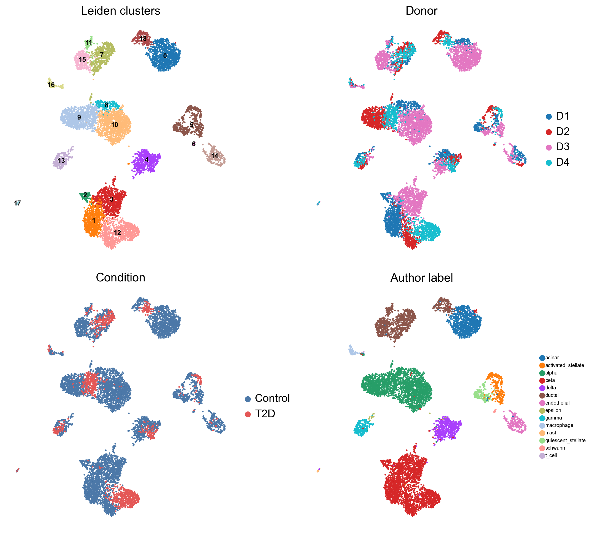

本章目标
- 理解 PCA → kNN → UMAP → Leiden 的顺序和每个参数；
- 能解释“19 个簇不是 19 种细胞类型”；
- 判断什么时候需要批次校正，什么时候不要。
为什么先 PCA 再聚类 直接在 2 万个基因上算距离，会被噪声和高表达基因主导。PCA 把表达压缩到几十个主成分，保留主要变异；kNN 在低维空间构建“细胞相似图”；Leiden 在图上找社区。UMAP 只是把图可视化，不参与聚类。
7.1 标准顺序
sc.tl.pca(adata, n_comps=50, svd_solver="arpack", random_state=42)
sc.pp.neighbors(adata, n_neighbors=15, n_pcs=30, random_state=42)
sc.tl.umap(adata, random_state=42)
sc.tl.leiden(adata, resolution=0.6, random_state=42,
flavor="igraph", n_iterations=2, directed=False)
| 参数 | 作用 | 本教程 |
|---|---|---|
n_comps=50 |
PCA 保留 50 个主成分 | 取前 30 个做 kNN |
n_neighbors=15 |
每个细胞的邻居数 | 15；太大合并小簇，太小碎片化 |
resolution=0.6 |
Leiden 粒度 | Baron 0.6；GSE81608 0.4 |
random_state=42 |
随机种子 | 保证可复现 |
7.2 本教程的结果
| GSE84133 | GSE81608 | |
|---|---|---|
| resolution | 0.6 | 0.4 |
| 簇数 | 19 | 8 |
| 合并后类型 | 11 | 4 |
GSE84133 的 19 个簇：
- β 细胞 4 簇（1、2、3、12），其中簇 2 高表达 DDIT3/HSPA5/HERPUD1，是 ER 应激状态；
- α 细胞 3 簇（8、9、10）；
- ductal 4 簇（7、11、15、18），其中 18 是 REG+；
- 其余为 acinar、δ、PP、stellate、schwann、endothelial、macrophage、mast。
GSE81608 的 8 个簇：
- α 细胞被拆成 5 簇（0、2、3、4、5）；
- β、δ、PP 各 1 簇；
- 合并注释为 4 类。
聚类数不等于细胞类型数。 簇是“表达相似的细胞群”，可能是同一类型的亚状态、供者/批次差异，也可能是过聚类。必须用 marker 注释后再决定合并。

7.3 怎么选 resolution
- 先跑 0.4 / 0.6 / 0.8 三个值，比较簇数和 marker；
- 如果多个 resolution 下同一群细胞稳定分开，说明结构稳健；
- 如果只在 1.2 出现、marker 又不特异，可能是过聚类；
- 不要用“能讲出故事”的 resolution 反推参数。
一个实用检查：
for res in [0.4, 0.6, 0.8, 1.0]:
sc.tl.leiden(adata, resolution=res, key_added=f"leiden_{res}",
flavor="igraph", n_iterations=2, directed=False)
print(res, adata.obs[f"leiden_{res}"].nunique())
7.4 批次：什么时候校正，什么时候不要
本教程没有做 Harmony/ComBat，因为 GSE84133 的 T2D 状态与 D4 供者完全共线：
- 如果按供者做 Harmony，可能把 D4 的疾病信号一起删掉；
- 如果观察到同一细胞类型按供者分开，先判断是技术批次还是真实个体差异；
- 跨数据集整合才考虑 Harmony/scVI/BBKNN，并且要在不包含疾病标签的嵌入上评估混合。
经验法则：批次校正的目的是让同一细胞类型在不同批次对齐，不是让疾病分组消失。分组与批次共线时，“校正后差异消失”可能是过校正。
7.5 预期结果与排错
你应该看到
- GSE84133：leiden 有 19 个类别，最大簇约 1,135 个细胞；
- GSE81608：leiden 有 8 个类别，α 细胞占多数；
- UMAP 上同类细胞聚在一起，但不同供者会有一定混合；
- 没有“所有细胞挤成一团”或“每个细胞一个簇”。
| 现象 | 可能原因 | 处理 |
|---|---|---|
| 所有细胞一个簇 | 未归一化/未 log，或 HVG 太少 | 检查 X 分布、HVG 数 |
| 每个供者一簇 | 强批次效应 | 检查 donor 着色；考虑 Harmony，但注意共线 |
| 每个细胞一个簇 | resolution 太高/邻居太少 | 降 resolution，增 n_neighbors |
LLVM ERROR: __svml_sqrtf16 |
numba/llvmlite 在 Windows 的 SVML 问题 | 设置 NUMBA_DISABLE_INTEL_SVML=1 |
ModuleNotFoundError: leidenalg |
未安装 | pip install leidenalg igraph |
检查点 Q1：UMAP 上的距离能直接当“分化距离”吗？
Q2：为什么 GSE81608 的 α 细胞被拆成 5 簇，却不代表 5 种 α 细胞？
Q3：什么情况下应该做 Harmony？本教程为什么不做？
参考答案
1. 不能。UMAP 主要保留局部邻接关系，全局距离/簇间距离不可靠；要看 marker 和独立验证。 2. 可能是供者/技术差异或过聚类；marker 仍指向 α，合并为一种类型更合理。 3. 当同一细胞类型在不同批次明显分开、且批次与生物学不共线时。本教程疾病与供者共线，校正可能删掉疾病信号，所以不做。下一步
聚类只是“分组”。下一步用 marker 给每个簇命名，并用作者标签做独立验证；GSE84133 的 ARI 会达到 0.968。